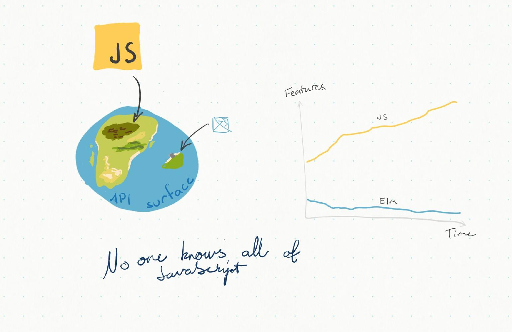

The Why and When of Choosing Elm
the Visual Edition

Read this to
- gain a quick understanding of where Elm fits the picture well and where it poses challenges
I expect you to know
- the basics of frontend development
For a textual version of this content, see here.
Each picture has an expandable text section if you’d like some explanation for the graphics.
Click on this to try expanding…
This is a quick overview of why and when you should consider choosing Elm over JavaScript.
What is Elm?
- Elm is a language (and “framework”) for building web frontend applications
- Can be used in place of HTML, CSS and JavaScript, and compiles into them

JS gets more complex, Elm gets simpler
- The amount of features, or the “API surface”, of JavaScript grows all the time
- Elm’s API surface is much much smaller to begin with, and it’s actually been shrinking the past few releases
(Summary of the table)
-
Elm does not have
this,null/undefined, runtime exceptions or multiple paradigms - Elm does have guarantees of correctness, settled-upon tooling and great ease of refactoring
- JavaScript has the opposite
Lean development is continuous refactoring
- The features on the previous picture, especially the fickleness of refactoring and lack of guarantees, leads to the fact that JavaScript is in fact poorly suited for lean development
- Elm, on the other hand, is a dream to work with when the requirements change and the software needs to be adapted
Learning a completely new language may sound like a huge investment, but:
- JavaScript is not a very well defined area of expertise. There’s TypeScript, Flow, React, Vue.js, Angular, plus the build tools
- Essentially every a JavaScript project is a unique combination of libraries and design decisions
- Take at least 1-2 weeks for new developers to familiarize themselves with
- Elm takes about 2 weeks for new developers to get productive with
Elm has incredible upsides
- Even a newcomer is not likely to inadvertently mess up a codebase, because the language has such strong guarantees
- A superb compiler that tells what the problem in my code is, and often suggests how to fix it
- The code is very easy to read, and it always follows the same general pattern
What about the “bus factor”, what if Elm’s development was dropped?
- We’d be fine using the current version of Elm for the foreseeable future
- The committee behind JavaScript specifications have the “One JavaScript” principle, which basically means “everything that has been introduced to JavaScript, stays in JavaScript”
- There is no reason why you’d need the new JavaScript features, and if you want to, you can call that from Elm
Elm is a poor fit for things like
- Mostly static pages (e.g. news websites)
- Very short projects where you actually want to use ready-made UI components (e.g. MVP admin UIs)
- Lots of integration with terrible third-party JavaScript (advertisements in particular)
- Sites that need page-by-page visibility in search engines
Elm is great for
- Single page applications
- Bespoke design
- Longer project (> 2 months)
- Especially helpful for bigger frontend teams